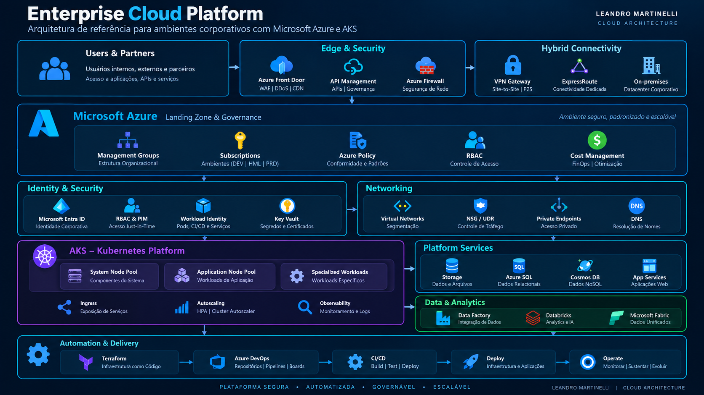

CASE STUDY • CLOUD ARCHITECTURE
Construindo e Operando uma Plataforma Enterprise com Azure e AKS
Arquitetura, segurança, Kubernetes, automação, conectividade, governança e operação de ambientes Cloud em escala corporativa.
01
Contexto
A evolução de ambientes corporativos para Cloud exige uma abordagem arquitetural capaz de equilibrar escalabilidade, segurança, automação, governança e eficiência operacional.
Neste cenário, a plataforma foi estruturada sobre Microsoft Azure, utilizando diferentes serviços de infraestrutura, dados, integração, segurança e observabilidade, além do Azure Kubernetes Service (AKS) como plataforma para execução de workloads containerizados.
A arquitetura precisava atender diferentes necessidades de workloads e equipes, mantendo padrões consistentes de acesso, conectividade, provisionamento e operação.
O ambiente envolve múltiplas subscriptions e diferentes componentes de uma plataforma Cloud corporativa, exigindo padronização, automação e governança para sustentar sua evolução.
02
O desafio arquitetural
O principal desafio não estava apenas em disponibilizar recursos de Cloud, mas em construir uma plataforma capaz de crescer mantendo segurança, padronização e controle operacional.
A arquitetura precisava conciliar diferentes tipos de workloads, equipes com responsabilidades distintas, múltiplas subscriptions e requisitos de conectividade entre ambientes, sem transformar o crescimento da plataforma em aumento proporcional da complexidade operacional.
Escala
Estruturar a plataforma para suportar o crescimento de recursos, subscriptions e workloads sem perder padrões arquiteturais.
Segurança
Estabelecer identidade e autorização de forma consistente, aplicando o princípio do menor privilégio aos diferentes componentes da plataforma.
Conectividade
Integrar recursos Cloud com ambientes corporativos e diferentes pontos de conectividade, mantendo isolamento e controle de tráfego.
Automação
Reduzir atividades manuais utilizando Infrastructure as Code, pipelines e processos padronizados de entrega.
Governança
Aplicar padrões de organização, acesso, segurança e operação capazes de acompanhar a evolução da plataforma.
Eficiência operacional
Criar mecanismos que permitam operar e evoluir o ambiente com maior previsibilidade, observabilidade e controle.
O objetivo não era simplesmente adicionar mais recursos à Cloud, mas estabelecer uma plataforma reutilizável, segura e governável sobre a qual diferentes workloads pudessem evoluir.
03
Visão da arquitetura
A arquitetura foi organizada em camadas para separar responsabilidades e permitir que identidade, conectividade, segurança, workloads, serviços de plataforma, dados e automação evoluam de forma integrada.
Essa abordagem reduz o acoplamento entre componentes e estabelece uma fundação comum para diferentes tipos de workloads e serviços executados no Microsoft Azure.

Organização da plataforma, subscriptions, políticas, controle de acesso e gestão de custos.
Microsoft Entra ID, RBAC e identidades utilizadas por usuários, automações e workloads.
Segmentação de rede, controle de tráfego, resolução de nomes, acesso privado e conectividade híbrida.
Plataforma Kubernetes para execução e isolamento de workloads containerizados com diferentes requisitos.
Serviços Azure utilizados pelas aplicações e plataformas de dados, integração e analytics.
Infrastructure as Code, versionamento, pipelines e processos automatizados de entrega e evolução.
Nenhuma dessas camadas deve ser tratada isoladamente. Uma alteração em identidade, rede ou governança pode impactar diretamente workloads, pipelines e serviços de plataforma. A arquitetura precisa ser analisada como um sistema integrado.
04
Azure & Networking
A camada de networking funciona como uma das fundações da plataforma. Além de conectar recursos Azure, ela precisa controlar os caminhos de comunicação entre workloads, serviços de plataforma, ambientes corporativos e integrações externas.
A arquitetura considera segmentação de redes, controle de tráfego, resolução de nomes e conectividade híbrida, permitindo que diferentes componentes se comuniquem de forma controlada e previsível.
Virtual Networks
VNets e subnets permitem segmentar componentes da plataforma conforme função, requisitos de segurança e padrões de conectividade.
Hybrid Connectivity
VPN Gateway e ExpressRoute possibilitam integrar workloads Azure com datacenters e outros ambientes corporativos quando necessário.
Traffic Control
NSGs, rotas e controles de rede ajudam a limitar os fluxos permitidos entre diferentes componentes da arquitetura.
Private Access
Private Endpoints podem ser utilizados para manter o acesso a determinados serviços Azure através da rede privada, reduzindo exposição desnecessária à Internet.
DNS
A resolução de nomes precisa acompanhar a topologia de rede, especialmente em cenários híbridos e no consumo privado de serviços Azure.
Resiliência de conectividade
Diferentes caminhos de conectividade podem ser utilizados conforme os requisitos de disponibilidade, integração e continuidade dos workloads.
Em ambientes híbridos, conectividade não deve ser analisada apenas como alcance de rede. Rotas, DNS, segurança, disponibilidade e dependências das aplicações precisam ser avaliados em conjunto.
05
AKS & Workloads
O Azure Kubernetes Service (AKS) funciona como uma das principais plataformas de execução para workloads containerizados, permitindo combinar a flexibilidade do Kubernetes com serviços gerenciados do ecossistema Azure.
Em um ambiente corporativo, entretanto, a arquitetura não termina na criação do cluster. É necessário considerar capacidade computacional, isolamento entre workloads, identidade, autorização, escalabilidade, atualização e sustentação contínua da plataforma.
Node Pools
Diferentes node pools permitem separar workloads conforme requisitos de processamento, capacidade, disponibilidade e características específicas de execução.
Workload Segmentation
A distribuição dos workloads precisa considerar isolamento, utilização de recursos e impacto operacional entre aplicações executadas no cluster.
Identity & Authorization
Microsoft Entra ID, Azure RBAC e mecanismos nativos do Kubernetes permitem estruturar autenticação e autorização conforme as responsabilidades das equipes.
Workload Identity
Workloads podem utilizar identidades federadas para acessar serviços Azure sem depender do armazenamento de credenciais estáticas dentro do cluster.
Scaling
A capacidade da plataforma deve acompanhar a demanda dos workloads, considerando escalabilidade de pods e infraestrutura computacional.
Operations
Upgrade, troubleshooting, observabilidade, capacidade e segurança fazem parte do ciclo contínuo de sustentação do ambiente Kubernetes.
A operação de Kubernetes em ambiente corporativo exige decisões que atravessam compute, networking, identidade, segurança, automação e observabilidade. O desenho do cluster precisa acompanhar o ciclo de vida dos workloads que ele suporta.
A decisão entre Azure RBAC e Kubernetes RBAC é abordada em detalhes no artigo AKS: Azure RBAC ou Kubernetes RBAC? .
06
Identity & Security
Em uma plataforma enterprise, identidade e segurança precisam fazer parte do desenho arquitetural desde o início. Usuários, equipes, pipelines e workloads possuem necessidades diferentes de acesso e devem ser tratados de acordo com suas responsabilidades.
A estratégia combina identidade corporativa, controle de acesso baseado em funções e autenticação federada, reduzindo a dependência de credenciais estáticas e permitindo aplicar o princípio do menor privilégio em diferentes camadas da plataforma.
Microsoft Entra ID
Identidade corporativa utilizada como base para autenticação de usuários e integração com diferentes serviços Azure.
Role-Based Access Control
Azure RBAC permite associar permissões às responsabilidades necessárias, evitando concessões excessivas de acesso aos recursos da plataforma.
Federated Identity
OIDC e Workload Identity Federation permitem que automações obtenham identidade no Azure sem depender de secrets de longa duração armazenados nos pipelines.
AKS Authorization
A autorização dentro do AKS pode combinar Microsoft Entra ID com Azure RBAC ou mecanismos nativos de Kubernetes RBAC, conforme o modelo de governança adotado.
Workload Identity
Aplicações executadas no Kubernetes podem utilizar identidades específicas para acessar recursos Azure, evitando compartilhar credenciais entre workloads.
Secrets & Sensitive Data
Credenciais e informações sensíveis devem permanecer fora do código e ser consumidas através de mecanismos seguros de identidade e gerenciamento de segredos.
A pergunta não deve ser apenas “quem consegue acessar?”, mas “qual é a menor permissão necessária para executar essa função?”. Essa abordagem reduz exposição e melhora a governança do ambiente.
Sempre que possível, identidades federadas são preferíveis ao uso de credenciais persistentes. Isso reduz a necessidade de armazenar, distribuir e rotacionar secrets utilizados por automações.
07
Infrastructure as Code
À medida que a plataforma cresce, o provisionamento manual deixa de ser sustentável. A infraestrutura precisa ser reproduzível, versionada e submetida aos mesmos princípios de engenharia utilizados no desenvolvimento de software.
O Terraform é utilizado para transformar definições de infraestrutura em código, permitindo padronizar configurações, revisar alterações e manter histórico das decisões realizadas ao longo da evolução do ambiente.
Versionamento
As definições de infraestrutura permanecem em repositórios Git, permitindo acompanhar alterações e manter histórico de evolução.
Revisão
Alterações podem passar por Pull Requests e revisão antes de serem incorporadas à versão principal da infraestrutura.
Terraform Plan
Antes da execução, o plano permite avaliar quais recursos serão criados, modificados ou removidos pela alteração proposta.
Terraform Apply
Após validação, a alteração pode ser aplicada de forma controlada, reduzindo intervenções manuais no ambiente.
Remote State
O estado remoto permite centralizar as informações utilizadas pelo Terraform e estabelecer uma base consistente para execução dos processos de infraestrutura.
Padronização
Padrões reutilizáveis reduzem diferenças entre implementações e facilitam a adoção das decisões arquiteturais da plataforma.
O ganho do IaC não está apenas em automatizar a criação de recursos. O principal benefício está em tornar mudanças de infraestrutura versionáveis, revisáveis, reproduzíveis e auditáveis.
08
CI/CD & Automation
A automação da plataforma não termina no provisionamento da infraestrutura. Mudanças em infraestrutura, configurações e workloads precisam seguir processos controlados de validação e entrega.
Azure DevOps e pipelines de CI/CD são utilizados para transformar essas mudanças em fluxos reproduzíveis, reduzindo atividades manuais e criando rastreabilidade entre código, revisão e implantação.
Source Control
Código de infraestrutura e automações permanecem versionados, permitindo rastrear alterações e utilizar branches e Pull Requests como parte do processo de mudança.
Validation
Pipelines podem executar validações antes da implantação, identificando problemas de configuração ou infraestrutura antes que a mudança alcance o ambiente de destino.
Deployment
Etapas automatizadas tornam a implantação mais consistente e reduzem diferenças causadas por procedimentos manuais.
Federated Authentication
Workload Identity Federation permite que pipelines autentiquem no Azure utilizando identidades federadas, evitando credenciais persistentes armazenadas como secrets.
Approvals & Controls
Revisões e controles podem ser adicionados aos pontos críticos do fluxo para separar validação, aprovação e execução das mudanças.
Operational Automation
Além de deployments, automações podem apoiar atividades operacionais recorrentes, reduzindo esforço manual e aumentando a previsibilidade da plataforma.
Sempre que possível, pipelines utilizam autenticação federada para acessar recursos Azure. Dessa forma, o processo de CI/CD reduz a dependência de credenciais de longa duração e se integra ao modelo de identidade e segurança da plataforma.
09
Governance & FinOps
Conforme o ambiente Cloud cresce, decisões descentralizadas podem aumentar rapidamente a complexidade operacional e financeira. Governança passa a ser necessária para estabelecer padrões sem impedir a evolução dos workloads.
A estratégia combina organização dos recursos, controle de acesso, políticas, padronização e acompanhamento de custos, criando uma visão mais consistente sobre como a plataforma é utilizada e evolui.
Management Groups
A organização hierárquica permite aplicar princípios de governança sobre diferentes subscriptions e estabelecer responsabilidades em níveis adequados da plataforma.
Subscriptions
A separação por subscriptions ajuda a estabelecer limites de responsabilidade, acesso, custos e ciclo de vida dos ambientes.
RBAC
Permissões são associadas às responsabilidades necessárias, reduzindo acessos excessivos e apoiando o princípio do menor privilégio.
Policies & Standards
Políticas e padrões arquiteturais ajudam a reduzir configurações inconsistentes e direcionam a criação de novos recursos.
Cost Visibility
Custos precisam ser analisados por contexto, serviço e padrão de consumo para identificar oportunidades reais de otimização.
Continuous Optimization
Rightsizing, revisão de tiers, desligamento de recursos desnecessários e análise de utilização fazem parte de um processo contínuo de eficiência.
O objetivo é criar visibilidade suficiente para equilibrar custo, desempenho, disponibilidade e necessidade do negócio. Uma redução de custo que comprometa a operação não representa uma otimização sustentável.
10
Resultados
A consolidação desses princípios permitiu evoluir a plataforma de forma mais estruturada, reduzindo decisões isoladas e criando uma base comum para infraestrutura, Kubernetes, segurança, automação e governança.
Mais do que a adoção de tecnologias específicas, o principal resultado foi estabelecer padrões arquiteturais capazes de acompanhar o crescimento dos workloads e das necessidades da organização.
O maior ganho foi transformar diferentes componentes de Cloud em uma plataforma integrada, na qual networking, identidade, AKS, automação, governança e custos são tratados como partes do mesmo sistema.
11
Lições arquiteturais
A evolução de uma plataforma Cloud enterprise mostra que decisões técnicas dificilmente permanecem isoladas. Identidade, networking, Kubernetes, automação e governança possuem dependências que precisam ser consideradas desde o desenho inicial.
Arquitetura antes da ferramenta
A escolha de um serviço ou tecnologia deve partir do problema arquitetural que precisa ser resolvido, e não apenas da disponibilidade da ferramenta.
Padronização reduz complexidade
Quanto mais o ambiente cresce, maior o valor de padrões reutilizáveis para rede, identidade, infraestrutura e automação.
Segurança precisa ser parte do fluxo
Identidade, RBAC, autenticação federada e proteção de dados funcionam melhor quando são incorporados à arquitetura e aos pipelines, e não adicionados posteriormente.
Kubernetes exige operação contínua
AKS reduz parte da complexidade do control plane, mas a responsabilidade sobre workloads, capacidade, segurança, observabilidade e ciclo de vida continua sendo essencial.
Automação precisa de governança
Automatizar sem padrões pode apenas acelerar a criação de inconsistências. IaC e CI/CD precisam estar alinhados com revisão, segurança e controles da plataforma.
Cloud é um processo contínuo
Arquitetura, custos, capacidade, segurança e operação precisam ser revisitados continuamente conforme workloads e necessidades do negócio evoluem.
Uma plataforma enterprise sustentável não depende de uma única tecnologia. Ela nasce da integração entre arquitetura, pessoas, processos, automação, segurança e governança.
Conclusão
Construir uma plataforma enterprise em Microsoft Azure e AKS exige muito mais do que provisionar recursos ou operar Kubernetes.
O desafio está em integrar arquitetura, identidade, networking, segurança, automação, governança e eficiência operacional em uma plataforma capaz de evoluir de forma consistente.
Quando esses elementos são tratados como partes de um mesmo sistema, a Cloud deixa de ser apenas infraestrutura e passa a funcionar como uma plataforma de engenharia para suportar aplicações, dados e transformação digital em escala.
Arquitetura Cloud é um processo contínuo de decisões, evolução e equilíbrio entre segurança, disponibilidade, velocidade, governança e custo.
Este conteúdo foi útil?
Compartilhe este Case Study com sua rede ou continue explorando outros conteúdos sobre Azure, Kubernetes, arquitetura Cloud, segurança, automação e FinOps.